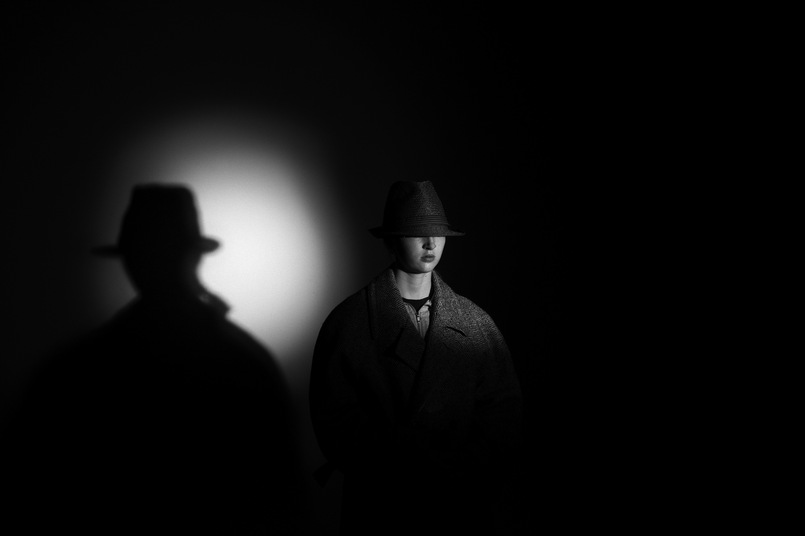
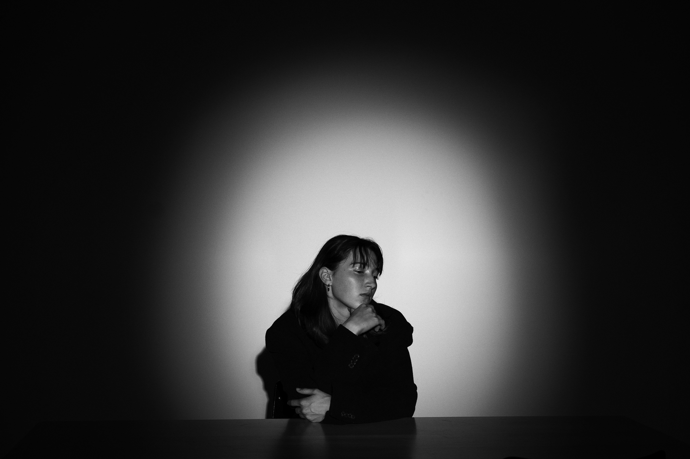
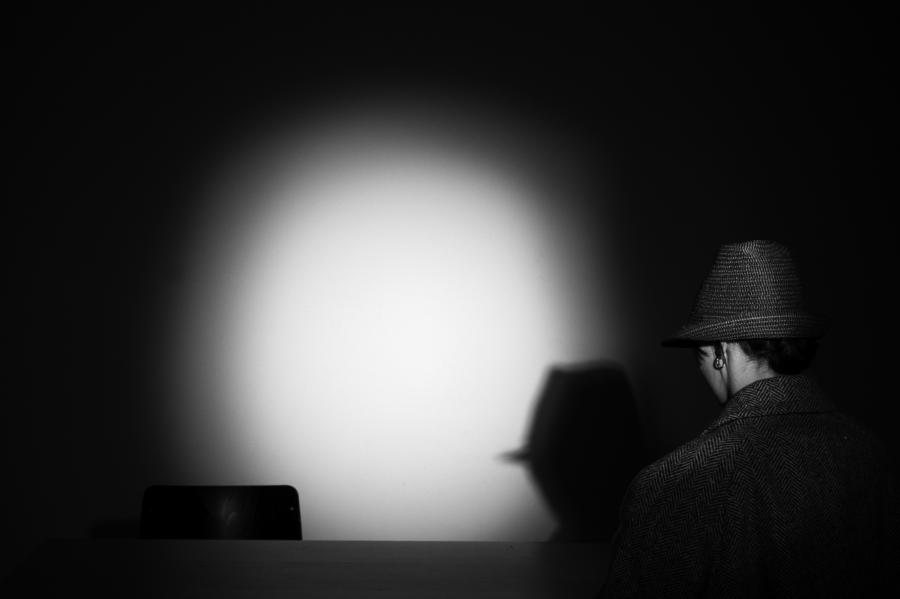
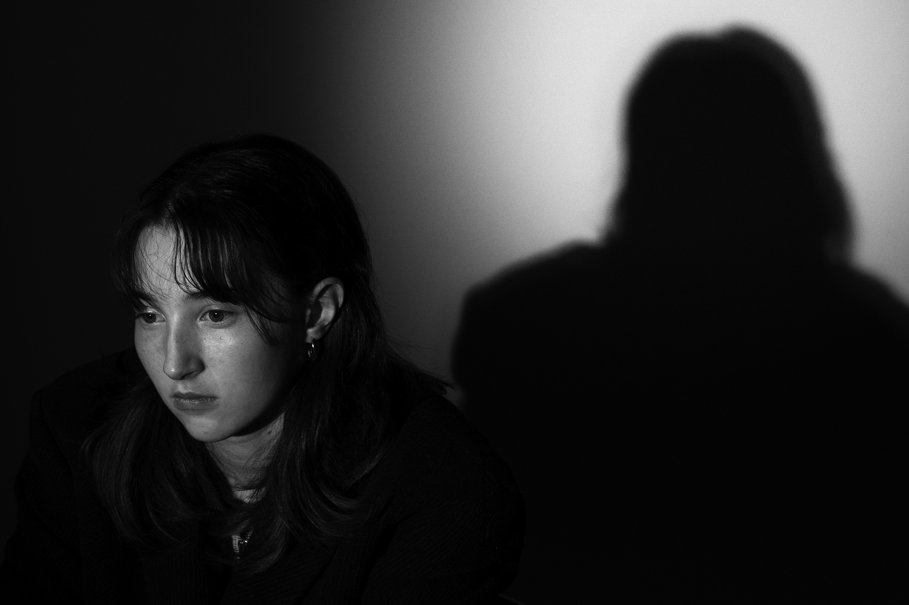
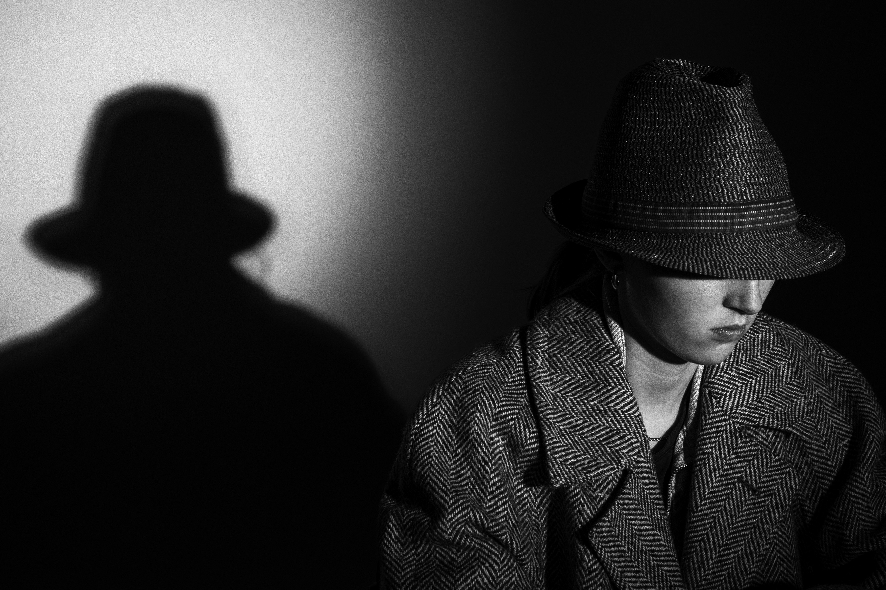
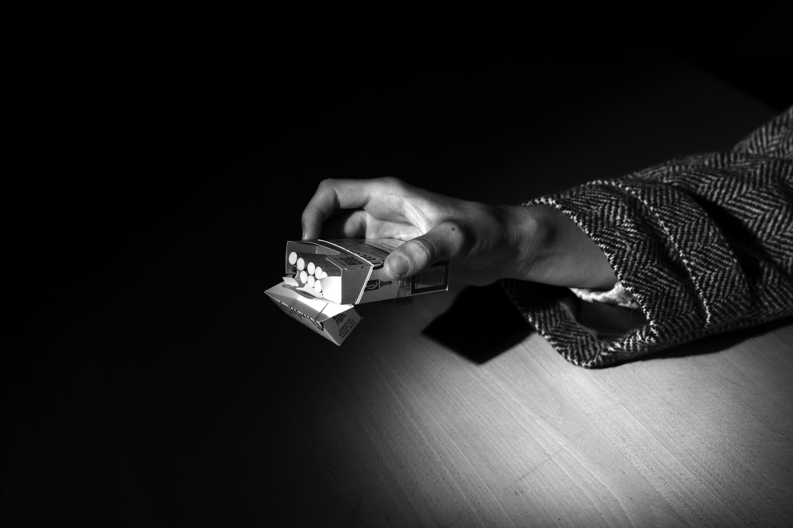

Das Verhör ist eine Fotoserie welche im April 2024 entstand.







Ausgehend von einer selbst verfassten Geschichte entstand die Fotoserie Das Verhör. Als Inspiration
galten die Film noir der 50er- und 60er-Jahre wie auch die klare Sprache von Alfred Hitchcock.
Über sechs Bilder schlüpft eine einzelne Person in die Rolle von Kommissar und Angeklagtem. Durch die
Komposition und den Einsatz von Licht und Schatten werden die beiden Personen in denselben Raum gesetzt.
Das Projekt ist ein Versuch, ein klares Referenzmaterial so genau wie möglich umzusetzen und zu
verwirklichen – und dabei die Atmosphäre des klassischen Film noir einzufangen.